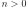
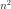
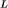
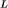
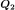
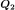

CovarianceMatrix¶
-
class
CovarianceMatrix(*args)¶ Covariance (real symmetric positive definite) matrix.
Parameters: size : int, , optional
Matrix size. Default is 1.
values : sequence of float with size , optional
Values. OpenTURNS uses column-major ordering (like Fortran) for reshaping the flat list of values. Default creates an identity matrix.
Raises: TypeError : If the matrix is not symmetric.
Examples
Create a matrix
>>> import openturns as ot >>> C = ot.CovarianceMatrix(2, [1.0, 0.5, 0.5, 1.0]) >>> print(C) [[ 1 0.5 ] [ 0.5 1 ]]
Get or set terms
>>> print(C[0, 1]) 0.5 >>> C[0, 1] = 0.6 >>> print(C[0, 1]) 0.6 >>> print(C[:, 0]) [[ 1 ] [ 0.6 ]]
Create an openturns matrix from a symmetric numpy 2d-array (or matrix, or 2d-list)…
>>> import numpy as np >>> np_2d_array = np.array([[1.0, 0.5], [0.5, 1.0]]) >>> ot_matrix = ot.CovarianceMatrix(np_2d_array)
and back
>>> np_matrix = np.matrix(ot_matrix)
Methods
checkSymmetry()Check if the internal representation is really symmetric. clean(threshold)Set elements smaller than a threshold to zero. computeCholesky([keepIntact])Compute the Cholesky factor. computeDeterminant([keepIntact])Compute the determinant. computeEV([keepIntact])Compute the eigen values decomposition (EVD). computeEigenValues([keepIntact])Compute eigen values. computeGram([transpose])Compute the associated Gram matrix. computeLogAbsoluteDeterminant([keepIntact])Compute the logarithm of the absolute value of the determinant. computeQR([fullQR, keepIntact])Compute the QR factorization. computeSVD([fullSVD, keepIntact])Compute the singular values decomposition (SVD). computeSingularValues([keepIntact])Compute the singular values. computeTrace()Compute the trace of the matrix. getClassName()Accessor to the object’s name. getDimension()Accessor to the dimension (the number of rows). getId()Accessor to the object’s id. getImplementation(*args)Accessor to the underlying implementation. getName()Accessor to the object’s name. getNbColumns()Accessor to the number of columns. getNbRows()Accessor to the number of rows. isDiagonal()Test whether the matrix is diagonal or not. isEmpty()Tell if the matrix is empty. isPositiveDefinite()Test whether the matrix is positive definite or not. setName(name)Accessor to the object’s name. solveLinearSystem(*args)Solve a square linear system whose the present matrix is the operator. transpose()Transpose the matrix. -
__init__(*args)¶ Initialize self. See help(type(self)) for accurate signature.
-
checkSymmetry()¶ Check if the internal representation is really symmetric.
-
clean(threshold)¶ Set elements smaller than a threshold to zero.
Parameters: threshold : float
Threshold for zeroing elements.
Returns: cleaned_matrix :
MatrixInput matrix with elements smaller than the threshold set to zero.
-
computeCholesky(keepIntact=True)¶ Compute the Cholesky factor.
The Cholesky factor of a covariance (real symmetric positive definite) matrix
 is the lower triangular matrix  such that:
is the lower triangular matrix  such that:Parameters: keep_intact : bool, optional
A flag telling whether the present matrix can be overwritten or not. Default is True and leaves the present matrix unchanged.
Returns: cholesky_factor :
SquareMatrixThe left (lower) Cholesky factor.
Notes
This uses LAPACK’s DPOTRF.
-
computeDeterminant(keepIntact=True)¶ Compute the determinant.
Parameters: keep_intact : bool, optional
A flag telling whether the present matrix can be overwritten or not. Default is True and leaves the present matrix unchanged.
Returns: determinant : float
The square matrix determinant.
Examples
>>> import openturns as ot >>> A = ot.SquareMatrix([[1.0, 2.0], [3.0, 4.0]]) >>> A.computeDeterminant() -2.0
-
computeEV(keepIntact=True)¶ Compute the eigen values decomposition (EVD).
The eigen values decomposition of a square matrix
 with
size
with
size  reads:
reads:where is an diagonal matrix and is an orthogonal matrix.
Parameters: keep_intact : bool, optional
A flag telling whether the present matrix can be overwritten or not. Default is True and leaves the present matrix unchanged.
Returns: eigen_values :
PointThe vector of eigen values with size
that form the diagonal of
the matrix of the EVD.Phi :
SquareComplexMatrixThe left matrix of the EVD.
Notes
This uses LAPACK’S DSYEV.
Examples
>>> import openturns as ot >>> import numpy as np >>> M = ot.SymmetricMatrix([[1.0, 2.0], [2.0, -4.0]]) >>> eigen_values, Phi = M.computeEV() >>> Lambda = ot.SquareMatrix(M.getDimension()) >>> for i in range(eigen_values.getSize()): ... Lambda[i, i] = eigen_values[i] >>> np.testing.assert_array_almost_equal(Phi * Lambda * Phi.transpose(), M)
-
computeEigenValues(keepIntact=True)¶ Compute eigen values.
Parameters: keep_intact : bool, optional
A flag telling whether the present matrix can be overwritten or not. Default is True and leaves the present matrix unchanged.
Returns: eigenvalues :
PointEigen values.
See also
Examples
>>> import openturns as ot >>> M = ot.SymmetricMatrix([[1.0, 2.0], [2.0, -4.0]]) >>> print(M.computeEigenValues()) [-4.70156,1.70156]
-
computeGram(transpose=True)¶ Compute the associated Gram matrix.
Parameters: transposed : bool
Tells if matrix is to be transposed or not. Default value is True
Returns: MMT :
MatrixThe Gram matrix.
Notes
When transposed is set to True, the method computes . Otherwise it computes
Examples
>>> import openturns as ot >>> M = ot.Matrix([[1.0, 2.0], [3.0, 4.0], [5.0, 6.0]]) >>> MtM = M.computeGram() >>> print(MtM) [[ 35 44 ] [ 44 56 ]] >>> MMt = M.computeGram(False) >>> print(MMt) [[ 5 11 17 ] [ 11 25 39 ] [ 17 39 61 ]]
-
computeLogAbsoluteDeterminant(keepIntact=True)¶ Compute the logarithm of the absolute value of the determinant.
Parameters: keep_intact : bool, optional
A flag telling whether the present matrix can be overwritten or not. Default is True and leaves the present matrix unchanged.
Returns: determinant : float
The logarithm of the absolute value of the square matrix determinant.
sign : float
The sign of the determinant.
Examples
>>> import openturns as ot >>> A = ot.SquareMatrix([[1.0, 2.0], [3.0, 4.0]]) >>> A.computeLogAbsoluteDeterminant() [0.693147..., -1.0]
-
computeQR(fullQR=False, keepIntact=True)¶ Compute the QR factorization. By default, it is the economic decomposition which is computed.
The economic QR factorization of a rectangular matrix
with
(more rows than columns) is defined as follows:
where is an upper triangular matrix, is
 ,  is
, and and
both have orthogonal columns.
,  is
, and and
both have orthogonal columns.Parameters: full_qr : bool, optional
A flag telling whether Q, R or Q1, R1 are returned. Default is False and returns Q1, R1.
keep_intact : bool, optional
A flag telling whether the present matrix is preserved or not in the computation of the decomposition. Default is True and leaves the present matrix unchanged.
Returns: Q1 :
MatrixThe orthogonal matrix of the economic QR factorization.
R1 :
TriangularMatrixThe right (upper) triangular matrix of the economic QR factorization.
Q :
MatrixThe orthogonal matrix of the full QR factorization.
R :
TriangularMatrixThe right (upper) triangular matrix of the full QR factorization.
Notes
The economic QR factorization is often used for solving overdetermined linear systems (where the operator
has ) in the
least-square sense because it implies solving a (simple) triangular system:This uses LAPACK’s DGEQRF and DORGQR.
Examples
>>> import openturns as ot >>> import numpy as np >>> M = ot.Matrix([[1.0, 2.0], [3.0, 4.0], [5.0, 6.0]]) >>> Q1, R1 = M.computeQR() >>> np.testing.assert_array_almost_equal(Q1 * R1, M)
-
computeSVD(fullSVD=False, keepIntact=True)¶ Compute the singular values decomposition (SVD).
The singular values decomposition of a rectangular matrix
with
size reads:where
 is an orthogonal matrix,
is an orthogonal matrix,
 is an diagonal matrix and
is an orthogonal matrix.
is an diagonal matrix and
is an orthogonal matrix.Parameters: fullSVD : bool, optional
Whether the null parts of the orthogonal factors are explicitely stored or not. Default is False and computes a reduced SVD.
keep_intact : bool, optional
A flag telling whether the present matrix can be overwritten or not. Default is True and leaves the present matrix unchanged.
Returns: singular_values :
PointThe vector of singular values with size that form the diagonal of the
matrix
of the SVD.U :
SquareMatrixThe left orthogonal matrix of the SVD.
VT :
SquareMatrixThe transposed right orthogonal matrix of the SVD.
Notes
This uses LAPACK’s DGESDD.
Examples
>>> import openturns as ot >>> import numpy as np >>> M = ot.Matrix([[1.0, 2.0], [3.0, 4.0], [5.0, 6.0]]) >>> singular_values, U, VT = M.computeSVD(True) >>> Sigma = ot.Matrix(M.getNbRows(), M.getNbColumns()) >>> for i in range(singular_values.getSize()): ... Sigma[i, i] = singular_values[i] >>> np.testing.assert_array_almost_equal(U * Sigma * VT, M)
-
computeSingularValues(keepIntact=True)¶ Compute the singular values.
Parameters: fullSVD : bool, optional
Whether the null parts of the orthogonal factors are explicitely stored or not. Default is False and computes a reduced SVD.
keep_intact : bool, optional
A flag telling whether the present matrix can be overwritten or not. Default is True and leaves the present matrix unchanged.
Returns: singular_values :
PointThe vector of singular values with size that form the diagonal of the
matrix
of the SVD decomposition.See also
Examples
>>> import openturns as ot >>> M = ot.Matrix([[1.0, 2.0], [3.0, 4.0], [5.0, 6.0]]) >>> print(M.computeSingularValues(True)) [9.52552,0.514301]
-
computeTrace()¶ Compute the trace of the matrix.
Returns: trace : float
The trace of the matrix.
Examples
>>> import openturns as ot >>> M = ot.SquareMatrix([[1.0, 2.0], [3.0, 4.0]]) >>> M.computeTrace() 5.0
-
getClassName()¶ Accessor to the object’s name.
Returns: class_name : str
The object class name (object.__class__.__name__).
-
getDimension()¶ Accessor to the dimension (the number of rows).
Returns: dimension : int
-
getId()¶ Accessor to the object’s id.
Returns: id : int
Internal unique identifier.
-
getImplementation(*args)¶ Accessor to the underlying implementation.
Returns: impl : Implementation
The implementation class.
-
getName()¶ Accessor to the object’s name.
Returns: name : str
The name of the object.
-
getNbColumns()¶ Accessor to the number of columns.
Returns: n_columns : int
-
getNbRows()¶ Accessor to the number of rows.
Returns: n_rows : int
-
isDiagonal()¶ Test whether the matrix is diagonal or not.
Returns: test : bool
Answer.
-
isEmpty()¶ Tell if the matrix is empty.
Returns: is_empty : bool
True if the matrix contains no element.
Examples
>>> import openturns as ot >>> M = ot.Matrix([[]]) >>> M.isEmpty() True
-
isPositiveDefinite()¶ Test whether the matrix is positive definite or not.
A matrix
is positive definite if
is positive for every compatible non-zero column vector  .
.Returns: test : bool
Answer.
Notes
This uses LAPACK’s DPOTRF.
-
setName(name)¶ Accessor to the object’s name.
Parameters: name : str
The name of the object.
-
solveLinearSystem(*args)¶ Solve a square linear system whose the present matrix is the operator.
Parameters: rhs : sequence of float or
Matrixwith values or rows, respectivelyThe right hand side member of the linear system.
keep_intact : bool, optional
A flag telling whether the present matrix can be overwritten or not. Default is True and leaves the present matrix unchanged.
Returns: The solution of the square linear system.
Notes
This will handle both matrices and vectors. Note that you’d better type explicitely the matrix if it has some properties that could simplify the resolution (see
TriangularMatrix).This uses LAPACK’S DGESV for matrices and DGELSY for vectors.
Examples
>>> import openturns as ot >>> import numpy as np >>> M = ot.SquareMatrix([[1.0, 2.0], [3.0, 4.0]]) >>> b = ot.Point([1.0] * 2) >>> x = M.solveLinearSystem(b) >>> np.testing.assert_array_almost_equal(M * x, b)
-
transpose()¶ Transpose the matrix.
Returns: MT :
SquareMatrixThe transposed matrix.
Examples
>>> import openturns as ot >>> M = ot.SquareMatrix([[1.0, 2.0], [3.0, 4.0]]) >>> print(M) [[ 1 2 ] [ 3 4 ]] >>> print(M.transpose()) [[ 1 3 ] [ 2 4 ]]
-